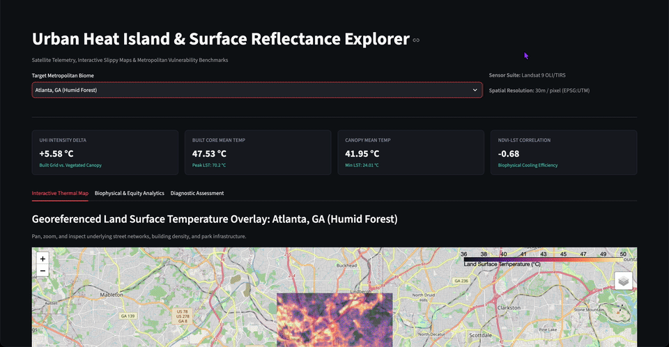

NOVA Observatory Full-Stack / 3D & FastAPI
An interactive 3D cinematic cosmic map featuring the NOVA boot sequence, planetary tiers, orbital telemetry, and automated guided tours powered by FastAPI and Three.js.
Background in AI data analysis, multimodal evaluation, and full-stack development. Currently expanding into 3D web visualizations, backend APIs, and satellite remote sensing workflows.
After working extensively in LLM annotation and model rating, I started building hands-on projects bridging interactive 3D web applications with real-world satellite data. These projects represent my practical work translating complex datasets and technical documentation into responsive, browser-based tools.
An interactive 3D cinematic cosmic map featuring the NOVA boot sequence, planetary tiers, orbital telemetry, and automated guided tours powered by FastAPI and Three.js.

[Add urban-heat-demo.gif to repository root]Landsat 8/9 thermal calibration & Folium interactive map walkthroughAn interactive geospatial application that processes Landsat 8/9 Level-2 satellite scenes to evaluate land surface temperature variations across urban areas, calculating NDVI and NDBI across metropolitan biomes.
STAC queries, coordinate reprojection via Rasterio, and radiometric calibration to Celsius.
With over 4 years of experience evaluating AI outputs, assessing prompt fidelity, and conducting rigorous data annotation, my focus centers on dataset integrity and practical system performance.
My recent work expands this background into Earth observation—combining Python spatial libraries like Rasterio and PyProj to turn raw scientific datasets into clear, usable web tools.